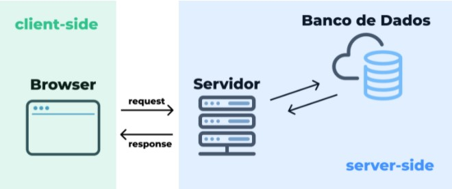

SAIBA TUDO SOBRE JAVASCRIPT
Para que serve JavaScript?
JavaScript é uma linguagem de programação interpretada estruturada, de script em alto nível com tipagem dinâmica fraca e multiparadigma. Juntamente com HTML e CSS, o JavaScript é uma das três principais tecnologias da World Wide Web. JavaScript é uma das linguagens de programação mais populares e usadas no mundo. pode aplicar essa linguagem e como ela se diferencia dos demais tipos.
JavaScript é uma linguagem de programação que permite a você implementar itens complexos em páginas web — toda vez que uma página da web faz mais do que simplesmente mostrar a você informação estática.
Com o Node.JS também é possível controlar hardwares. Podemos então usar o JavaScript para trabalhar além das telas dos computadores e celulares, como controlar drones. Ao programar placas, podemos criar códigos para até mesmo integrar vários objetos, o famoso Internet das Coisas
(IoT).
Como o JavaScript funciona ?
Para entender como o JS funciona, é preciso conhecer o conceito de “lado do cliente”, também chamado de client-side, e “lado do servidor”, ok?
Você sabe o que acontece quando você acessa um site? Basicamente, o que ocorre é uma requisição de acesso a um servidor que permite que um portal seja carregado na sua tela.

Nesse servidor, é onde acontece a “mágica” para devolver uma página, com HTML, CSS e Javascript para o seu browser, que é onde você está acessando esse site.
No seu navegador, que é o lado do cliente
, no caso, o usuário, vem a parte estática (HTML + CSS) e também a parte dinâmica (Javascript). Toda a comunicação que clientes não vêem entre uma aplicação e, por exemplo, um banco de dados, é do “lado do servidor”.
Por isso, falamos que existe o client-side, ou seja tudo que está acontecendo do lado do browser e de quem está acessando, e o server-side, tudo que acontece do lado do servidor, no backend da aplicação
Dentre as linguagens de programação existentes como Python, Ruby, Java, os navegadores conseguem interpretar apenas Javascript.
Origem do JS
O Javascript foi criado em 1995 pelo programador Brendan Eich. Naquela época, o nome de batismo foi Mocha e, logo depois, passou a ser conhecido por LiveScript.
No entanto, uma jogada de marketing marcou a criação da linguagem. No final de 1995, com a ascensão da linguagem Java no mundo da progração, o fundador da linguagen resolveu mudar o nome para algo que fosse sonoramente parecido. Nasceu assim, o Javascript.
Com o Javascript, a internet pode ficar mais dinâmica, com mais interações em uma página, diversos tipos de interações, animações, entre várias outras coisas. O primeiro navegador que começou a ter suporte para JS foi o Netscape.
- HTML – Permite adicionar conteúdos em uma página através de marcação de textos. É a estrutura óssea de um site.
- CSS – Especifica o estilo do design do layout de uma página. É tudo relacionado à aparência de um site.
- PHP – Dinamiza o processo de desenvolvimento de uma página adicionando extensões e aplicações dinâmicas.
- JavaScript – Controla o comportamento dos elementos de uma página, executando funções dinâmicos dos conteúdos, animações, aplicativos e interações em geral.
As áreas da programação em que o JS é usado ?
JavaScript no desenvolvimento web
Quando falamos de desenvolvimento web no front-end, além do simples Javascript puro, temos também uma infinidade de frameworks. Quem nunca ouviu a brincadeira de “enquanto você está lendo esse post, pelo menos um framework Javascript foi criado”? Isso é porque realmente existem muitos frameworks e estão surgindo novas “ondas” a todo momento. Mas se pudermos citar os principais e mais famosos, entre eles podemos falar de React, Angular e Vue.js.
-
Javascript no desenvolvimento Backend
Em 2019, o Javascript começou a se popularizar também no backend com a ajuda do NodeJs. Dessa forma, começou a ser muito mais simples para pessoas do frontend se aventurarem no backend e fazerem uma aplicação completa, já que elas não teriam que aprender uma nova linguagem para isso.
Você usando o Nodejs junto com uma biblioteca como o express, que auxilia com a parte de criar um servidor web, usar algum dos frameworks frontend e um banco de dados da sua escolha, a sua aplicação web já está completa.
-
Javascript no desenvolvimento mobile
Com a infinidade de frameworks sendo criados com Javascript, não poderíamos esquecer do desenvolvimento mobile. Um dos mais famosos frameworks JS para mobile é o React Native, mas existem outros também como Ionic, NativeScript, Mobile Angular UI, entre outros.
-
Javascript no desenvolvimento de games
Uma forma interessante e divertida de você aprender Javascript é através de jogos! E óbvio que o Javascript teria frameworks para ajudar a desenvolver seus jogos para a web. Existe uma página dedicada a esse assunto na MDN e um framework bem famoso para você se aventurar é o Phaser!
O Que é Possível Fazer Com JavaScript?
JavaScript é uma das linguagens de programação mais versáteis. Com ela, o desenvolvedor pode criar aplicações, sistemas e serviços para uma diversidade de finalidades.
O diferencial dela está no uso do Engine V8, um motor gráfico de código aberto conhecido por ter um alto desempenho nos sistemas e aplicações em que estiver instalado. O navegador Google Chrome, por exemplo, tem ele por padrão.
Foi a partir do Engine V8 que surgiu o Node.js, uma plataforma completa de desenvolvimento que permite aos programadores explorarem códigos e sistemas para baseados em JavaScript. Inclusive, pelo lado do servidor, e não apenas do usuário (cliente).
Com isso, surgiram ainda mais oportunidades de criação de aplicações, sistemas e serviços pelos desenvolvedores. Abaixo estão algumas delas, segundo a compatibilidade com plataformas.